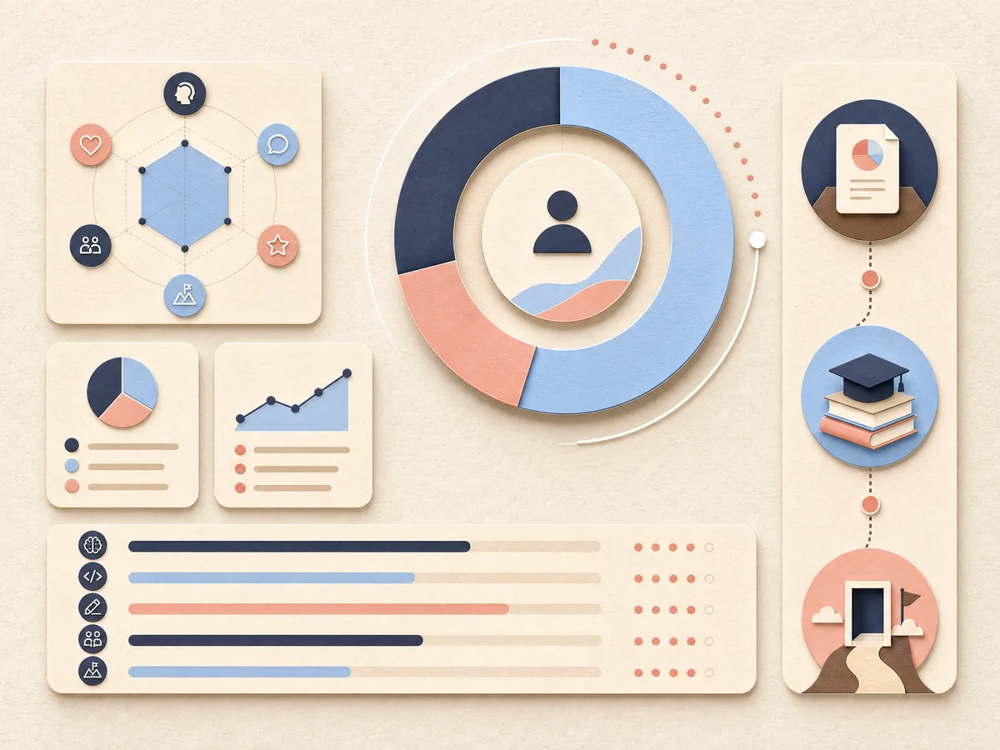

Your skill inventory
My skill map.
A snapshot of current proficiency, target level, and industry relevance. Keep it useful, not perfect.

Technical skills
Build the craft
Java
Python
SQL
HTML / CSS / JavaScript
Data structures
Professional skills
Make the work travel
Communication
Teamwork
Problem solving
Leadership
Prioritize next
Skill gap analysis
| Skill | Current | Target | Gap |
|---|---|---|---|
| Spring Boot | 35% | 75% | High |
| SQL | 65% | 80% | Medium |
| Java | 80% | 85% | Low |
| Cloud fundamentals | 44% | 70% | High |